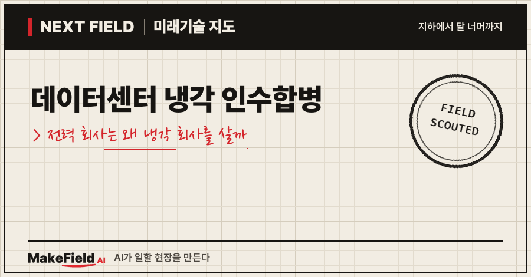
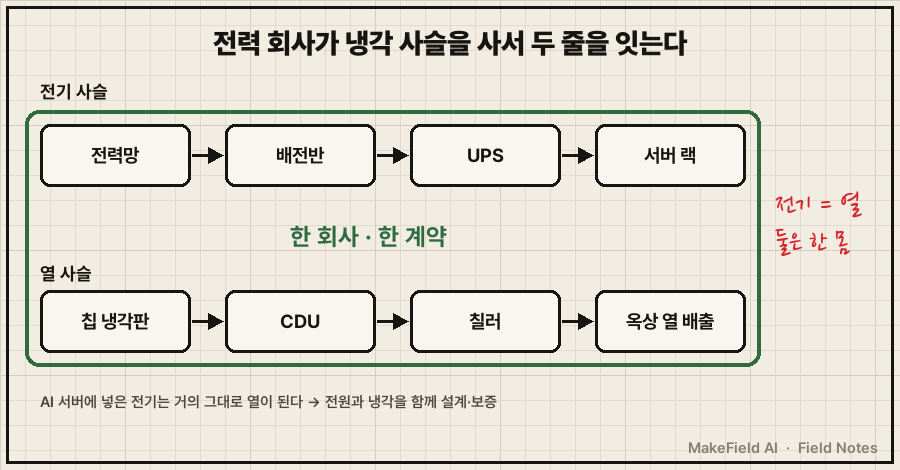
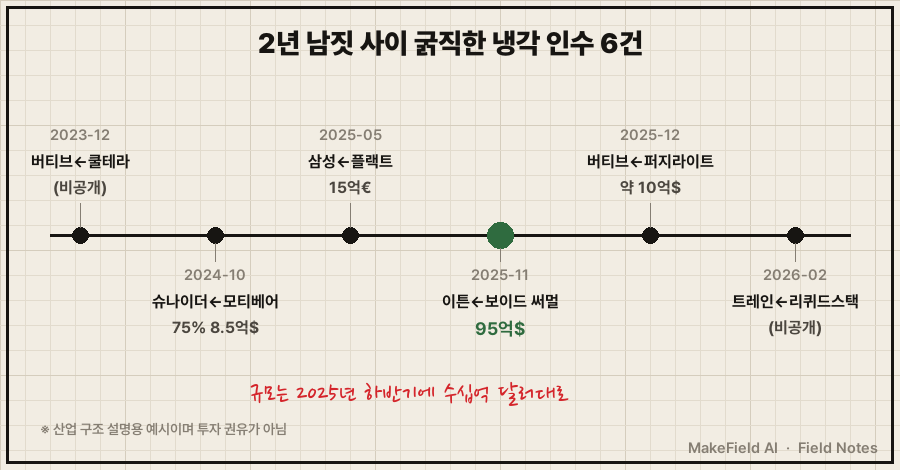
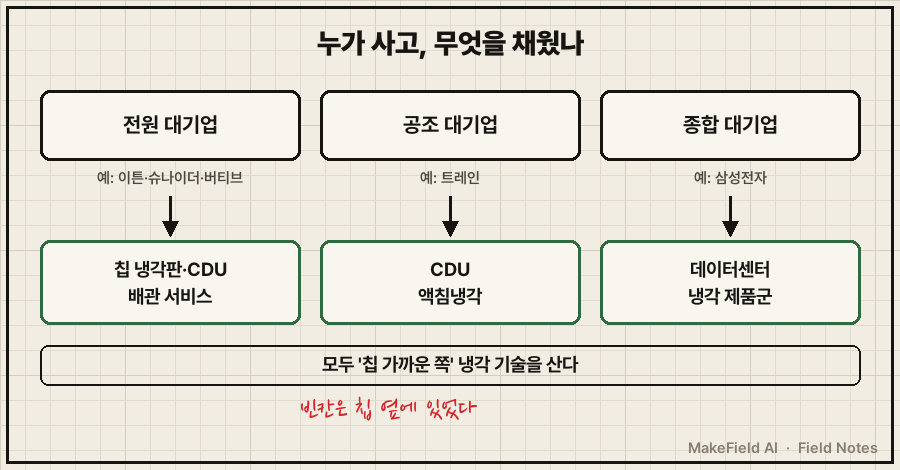

2025년 11월, 전기 설비 회사 이튼(Eaton)이 냉각 부품 회사 하나를 95억 달러에 사겠다고 발표했어요(BusinessWire 2025-11). 그 회사의 2026년 예상 매출은 17억 달러였습니다.
한 줄 요약: 데이터센터 냉각 인수합병은 AI 서버가 쓰는 전기와 내뿜는 열을 한 회사가 함께 책임지려는 움직임이고, 2024~2026년 사이 이튼·슈나이더 일렉트릭·버티브·트레인·삼성전자가 잇달아 액체냉각 회사를 사들였습니다. 가장 큰 거래인 이튼–보이드 써멀은 인수 대상의 2026년 예상 이익(EBITDA)의 22.5배 가격이었어요(BusinessWire 2025-11).
왜 '전기 회사'가 '냉각 회사'를 사는지, 누가 얼마를 냈는지, 이 흐름이 꺾일 수 있는 조건은 무엇인지 2026년 10월 기준 공개 자료로 차례로 풀어 볼게요.
1. 데이터센터 냉각 인수합병이란 무엇인가요
데이터센터 냉각 인수합병이란 전원 장비·공조 대기업이 서버용 액체냉각 기술을 가진 회사를 사들여 '전기+냉각'을 한 묶음으로 파는 흐름이다. 사는 쪽은 원래 배전반·무정전 전원(UPS)·대형 공조를 팔던 회사들이고, 팔리는 쪽은 서버 칩을 물로 식히는 장치를 만드는 회사들이에요.
💡 인수합병(M&A) — 한 회사가 다른 회사의 지분을 사서 경영권을 갖는 일. 기술을 처음부터 개발하는 대신 '이미 만든 회사'를 사서 시간을 단축한다.
💡 UPS(무정전 전원 장치) — 정전이 나도 몇 분~수십 분 동안 전기를 끊김 없이 대 주는 배터리 장치. 데이터센터 전원 설비의 기본이다.
팔리는 회사들이 만드는 핵심 장치는 CDU예요.
💡 CDU(냉각수 분배 장치) — 건물 냉수와 서버 냉각액을 열교환기로 나누고, 펌프·밸브로 온도·압력·유량을 맞춰 서버마다 나눠 주는 장치. 액체냉각의 '심장'이다.
💡 직접 액체냉각(DLC) — GPU 칩 위에 금속 냉각판을 붙이고 그 속으로 냉각액을 흘려 열을 바로 빼는 방식. PC로 치면 '수냉 쿨러'를 데이터센터 규모로 키운 것.
시장조사회사 Dell'Oro는 이 직접 액체냉각 가운데 냉각액이 끓지 않고 액체로만 도는 '1상' 방식이 AI 서버 묶음의 지배적 구조로 자리 잡았다고 평가했어요(Dell'Oro 2026-01).
2. 왜 지금 전력 회사가 냉각 회사를 사나요
AI 서버에서는 넣은 전기가 거의 그대로 열이 되기 때문에, 전원과 냉각을 따로 설계·공급하면 고객이 두 업체 사이에서 책임을 나눠야 한다. 한 회사가 둘 다 가지면 '전력망에서 칩까지' 한 장의 계약서로 팔 수 있어요. 이튼은 보이드 써멀 인수를 마무리하며 이 조합을 '전력망에서 칩까지(grid-to-chip)' 전력·냉각 시스템이라고 불렀습니다(Pulse 2.0 2026-03).

그림을 글로 정리하면, 데이터센터에는 전기가 들어가는 사슬(전력망→배전반→UPS→서버)과 열이 나가는 사슬(칩 냉각판→CDU→칠러→옥상)이 있고, 인수합병은 이 두 사슬을 한 회사가 모두 갖게 만드는 일이에요.
수요 쪽 숫자도 이 흐름을 밀어요.
| 지표 | 숫자 | 출처 |
|---|---|---|
| 세계 데이터센터 전력 사용 | 2024년 약 415TWh(세계 전력의 약 1.5%) → 2030년 약 945TWh 전망 | IEA(2025) |
| 데이터센터 액체냉각 시장 | 2025년 약 30억 달러(전년의 약 2배) → 2029년 약 70억 달러 전망 | Dell'Oro(2026-01) |
| 최첨단 GPU 1개의 발열(TDP) | 2029년 4,000W 초과 전망 | Dell'Oro(2026-01) |
💡 TWh(테라와트시) — 아주 큰 전력량 단위. 1TWh는 10억kWh다.
💡 TDP(열 설계 전력) — 칩이 최대로 일할 때 내는 열의 양. 냉각 장치는 이 숫자를 기준으로 설계한다. 4,000W면 가정용 전기난로 2~4대분이 칩 하나에서 나오는 셈이다.
칩 하나가 내는 열이 이만큼 커지면 바람(공랭)으로는 감당이 어렵고, 물길 공사가 데이터센터 설계의 기본이 돼요. 그 물길 기술을 가진 회사가 적다 보니 '사서 확보하는' 쪽이 빨랐던 겁니다.
3. 돈의 흐름 — 누가 누구를 얼마에 샀나요
이 글에서 공개 자료로 확인한 것만 모아도 2023년 말부터 2026년 초까지 굵직한 냉각 인수가 여섯 건이고, 가장 큰 거래는 이튼–보이드 써멀 95억 달러다. 확인된 조건을 표로 정리하면 이래요.
| 발표 | 산 회사(본업) | 산 대상 | 금액·조건 | 출처 |
|---|---|---|---|---|
| 2023-12 | 버티브(전원·냉각) | 쿨테라(영국, CDU·배관 매니폴드) | 금액 비공개(버티브 측 "재무상 중요하지 않은 규모") | 버티브(2023-12) |
| 2024-10 | 슈나이더 일렉트릭(전원·배전) | 모티베어(미국, 고성능 컴퓨팅 액체냉각) | 지분 75%에 현금 8.5억 달러, 나머지 25%는 2028년 인수 예정 | Sustainable Tech Partner(2024-10) |
| 2025-05 | 삼성전자(가전·공조) | 플랙트그룹(독일, 유럽 대형 공조사) | 지분 100% 15억 유로 | 스마트투데이(2025-05) |
| 2025-11 | 이튼(전원·배전) | 보이드 써멀(미국, 액체냉각 부품·시스템) | 95억 달러, 2026년 예상 EBITDA의 22.5배, 2026-03 인수 완료 | BusinessWire(2025-11), TED 매거진(2026-03) |
| 2025-12 완료 | 버티브 | 퍼지라이트(미국 휴스턴, 배관 세척·공기 빼기·여과 서비스) | 약 10억 달러 | 버티브(2025-12) |
| 2026-02 | 트레인(대형 공조) | 리퀴드스택(미국, CDU·액침냉각) | 2023년 소수 지분 투자 후 전량 인수, 금액 비공개 | Cooling Post(2026-02) |
💡 EBITDA(에비타) — 이자·세금·감가상각을 빼기 전 영업 이익. 회사가 본업으로 버는 현금 체력을 보여 주는 숫자다. "EBITDA의 22.5배"는 그 체력 22.5년 치를 한 번에 냈다는 뜻이다.
💡 액침냉각 — 서버를 전기가 통하지 않는 특수 액체에 통째로 담가 식히는 방식. 액체가 끓으며 열을 나르면 '2상', 끓지 않으면 '1상'이다.
💡 칠러 — 물을 차갑게 만드는 대형 냉동기. 건물용 '물 냉장고'다.
숫자를 조금만 나눠 보면 시장이 무엇에 값을 매기는지 보여요.
- 이튼–보이드 써멀: 보이드 써멀의 2026년 예상 매출 17억 달러 중 15억 달러가 액체냉각이었어요(BusinessWire 2025-11). 95억 달러 ÷ 17억 달러 ≈ 5.6배로, 매출의 다섯 배 넘는 값을 낸 셈입니다(단순 계산). 지금 버는 돈보다 앞으로 커질 액체냉각 수요에 값을 매긴 거래예요.
- 슈나이더–모티베어: 직원 약 150명인 회사의 지분 75%에 8.5억 달러를 냈어요(Sustainable Tech Partner 2024-10). 지분 100%로 환산하면 약 11억 달러대입니다(단순 계산).
- 버티브–퍼지라이트: 장비 회사가 아니라 현장 서비스 회사예요. 새 배관을 고속 물살로 씻고(플러싱), 배관 속 공기를 빼고(퍼징), 걸러 내는 일을 칠러에서 CDU까지 맡습니다(버티브 2025-12). 냉각판의 미세 통로는 이물질에 약해서, '물을 처음 깨끗하게 채우는 일'에 약 10억 달러 가격표가 붙은 거예요.
💡 플러싱·퍼징 — 새 배관을 센 물살로 씻어 이물질을 빼고(플러싱), 배관 속 공기를 빼내는(퍼징) 작업. 냉각판 미세 통로가 막히지 않게 하는 '첫 청소'다.

타임라인으로 보면 2023년 말 소규모 기술 인수로 시작해 2025년 하반기에 거래 규모가 수십억 달러대로 커졌고, 2026년 초까지 공조 대기업도 합류했어요.
※ 위 기업명과 수치는 산업 구조를 설명하기 위한 예시입니다. 특정 종목의 매수·매도를 권하는 글이 아닙니다.
4. 누가 사고 누가 팔리나요 — 세 부류의 구매자
사는 쪽은 '전원 대기업', '공조 대기업', '가전·종합 대기업' 세 부류이고, 팔리는 쪽은 냉각판·CDU·현장 서비스처럼 칩 가까운 쪽 기술을 가진 회사들이다. 각자 비어 있던 칸이 다릅니다.
| 구매자 부류 | 예시 | 원래 가진 것 | 인수로 채운 칸 |
|---|---|---|---|
| 전원 대기업 | 이튼, 슈나이더 일렉트릭, 버티브 | 배전반·UPS·전원 관리 | 칩 냉각판·CDU·배관 서비스 |
| 공조 대기업 | 트레인 | 칠러·건물 공조·제어 | CDU·액침냉각 |
| 가전·종합 대기업 | 삼성전자 | 가전 공조·빌딩 제어 | 유럽 중앙공조·데이터센터 냉각 제품군 |

액체냉각 시장 선두로 꼽히는 버티브는(Dell'Oro 2026-01) 숫자로 이 흐름을 보여 줘요. 2025년 매출 102.3억 달러로 전년보다 27.7% 늘었고, 연말 주문 잔고는 150억 달러로 1년 새 109% 불었습니다. 4분기 신규 주문은 약 252% 늘었고, 들어온 주문을 나간 매출로 나눈 값(수주/매출 비율)은 약 2.9배였어요(버티브 실적 공시 2026-02).
💡 주문 잔고(백로그) — 이미 계약했지만 아직 매출로 잡히지 않은 주문 총액. '앞으로 받을 돈의 예약 장부'다.
💡 수주/매출 비율(book-to-bill) — 들어온 주문 ÷ 나간 매출. 1보다 크면 일감이 쌓이는 중이다.
Dell'Oro는 액체냉각 시장 선두로 버티브를 꼽고, CoolIT·nVent·보이드가 큰 점유율을, AAON이 빠른 성장을 보인다고 정리했어요(Dell'Oro 2026-01). 이 중 보이드의 냉각 사업은 이제 이튼 소속입니다.
5. 이 흐름은 언제까지 가나요 — 한계와 반대 근거
인수 가격은 '액체냉각 수요가 계속 두 배씩 큰다'는 전제 위에 있고, 그 전제가 꺾이면 비싸게 산 회사가 먼저 흔들린다. 따져 볼 점은 이래요.
- 가격이 미래에 걸려 있다: 이익의 22.5배라는 가격은 성장이 이어져야 정당화돼요. 이튼도 이 인수가 조정 이익에 보탬이 되는 시점을 '인수 완료 후 2년 차'로 잡았습니다(TED 매거진 2026-03).
- 주문은 꺾일 수 있다: 수주/매출 비율이 1 아래로 내려가면 쌓이던 일감이 줄어든다는 신호예요. 버티브 2026년 3분기 실적은 이 글을 쓰는 시점(10월 27일)에 아직 공식 발표 전이라 확인하지 못했어요.
- 공급 과잉의 선례: 수요가 폭발하던 부품이 몇 년 만에 남아도는 일은 실제로 있었어요. 지난 Next Field에서 다룬 SiC 전력반도체가 그 예입니다.
- 시장 규모는 조사마다 다르다: Dell'Oro는 제조사 매출 기준으로 2029년 약 70억 달러를 봐요(Dell'Oro 2026-01). 장비만 보느냐, 설치·서비스까지 보느냐에 따라 다른 조사기관 숫자는 크게 달라지니 하나의 숫자로 단정하지 않는 게 안전합니다.
- 기술이 바뀔 수 있다: 지금 주류는 1상 직접 액체냉각이지만(Dell'Oro 2026-01), 트레인이 사들인 리퀴드스택처럼 액침냉각을 가진 회사도 있어요. 어느 방식이 이기느냐에 따라 인수의 성패가 갈릴 수 있습니다.
반대로 흐름을 받치는 근거도 분명해요. 세계 데이터센터 전력은 2030년까지 두 배 이상 늘 전망이고(IEA 2025), 이미 깔린 액체냉각 설비는 운영·정비 수요를 계속 남깁니다. 버티브가 장비가 아닌 배관 서비스 회사를 산 것도 이 '설치 이후의 돈'을 노린 선택으로 읽혀요.
자주 묻는 질문
Q. 이튼–보이드 써멀 인수는 끝났나요?
네. 2025년 11월 95억 달러에 발표됐고(BusinessWire 2025-11), 2026년 3월 인수 완료가 발표됐어요. 보이드 써멀은 이튼의 전기 부문(Electrical Global)에 편입됐습니다(TED 매거진 2026-03).
Q. 한국 기업도 냉각 회사를 샀나요?
삼성전자가 2025년 5월 독일 공조사 플랙트그룹 지분 100%를 15억 유로에 인수하는 계약을 맺었어요. 삼성전자는 AI 등으로 데이터센터 수요가 계속 늘 것으로 보고 인수했다고 밝혔고, 플랙트의 CDU 제품군도 함께 소개됐습니다(스마트투데이 2025-05).
Q. 냉각 인수합병과 액체냉각 CDU는 어떤 관계인가요?
인수 대상 대부분이 CDU나 칩 냉각판, 또는 그 배관을 다루는 회사예요. CDU 자체의 작동 원리는 앞서 쓴 '데이터센터 액체냉각 CDU란?' 글에서 자세히 다뤘습니다.
오늘의 용어 정리
- 인수합병(M&A) — 다른 회사 지분을 사서 경영권을 갖는 일
- UPS(무정전 전원 장치) — 정전 때도 전기를 끊김 없이 대 주는 배터리 장치
- CDU(냉각수 분배 장치) — 건물 냉수와 서버 냉각액을 나누고 온도·압력·유량을 맞추는 액체냉각의 심장
- 직접 액체냉각(DLC) — 칩에 냉각판을 붙여 냉각액으로 열을 빼는 방식
- 액침냉각 — 서버를 절연 액체에 담가 식히는 방식(1상·2상)
- TDP(열 설계 전력) — 칩이 최대로 일할 때 내는 열의 양
- EBITDA — 이자·세금·감가상각 전 영업 이익
- 칠러 — 물을 차갑게 만드는 대형 냉동기
- 플러싱·퍼징 — 새 배관 세척 / 배관 속 공기 빼기
- 주문 잔고(백로그) — 계약했지만 아직 매출이 안 된 주문 총액
- 수주/매출 비율 — 들어온 주문 ÷ 나간 매출, 1 초과면 일감이 쌓이는 중
지난 Next Field에서 냉각 장치(CDU)와 그 장치를 처음 켜는 시운전 단계를 봤다면, 오늘은 그 기술을 '누가 사 가는지'를 따라가 봤어요. 다음 몇 년 사이, 냉각 회사를 사는 쪽이 전원 회사일까요, 반도체 회사일까요?
출처
[1] BusinessWire(2025-11) — 이튼의 보이드 써멀 인수 발표: 매도자 골드만삭스 자산운용, 95억 달러, 2026년 예상 조정 EBITDA의 22.5배, 2026년 예상 매출 17억 달러 중 액체냉각 15억 달러
→ https://www.businesswire.com/news/home/20251103856036/en/
[2] TED 매거진(2026-03) — 이튼의 보이드 써멀 인수 완료, 직원 6,000명 이상, 전기 부문(Electrical Global) 편입, 조정 이익 기여는 인수 후 2년 차
→ https://tedmag.com/eaton-completes-acquisition-of-boyd-thermal/
[3] Pulse 2.0(2026-03) — 이튼이 인수 완료와 함께 '전력망에서 칩까지(grid-to-chip)' 전력·냉각 시스템 제공을 내세움
→ https://pulse2.com/eaton-boyd-thermal-acquisition-completed-to-strengthen-data-center-infrastructure-offering
[4] Sustainable Tech Partner(2024-10) — 슈나이더 일렉트릭의 모티베어 지분 75% 8.5억 달러 인수, 나머지 25% 2028년 인수 예정, 미국 버펄로·직원 약 150명
→ https://sustainabletechpartner.com/news/ma-schneider-electric-acquires-liquid-cooling-data-center-specialist-motivair/
[5] 버티브(2025-12) — 퍼지라이트 약 10억 달러 인수 완료, 미국 휴스턴, 배관 세척·공기 빼기·여과 서비스(칠러~CDU)
→ https://investors.vertiv.com/news/news-details/2025/Vertiv-Completes-Acquisition-of-PurgeRite-Expanding-Leadership-in-Liquid-Cooling-Services/
[6] 버티브(2023-12) — 영국 쿨테라 인수 계약, CDU·2차 배관·매니폴드 제조, 인수가는 버티브 측 '재무상 중요하지 않은 규모'로 비공개
→ https://www.businesswire.com/news/home/20231203643358/en/Vertiv-Acquisition-of-CoolTera-Ltd.-Boosts-Liquid-Cooling-Portfolio
[7] 버티브 실적 공시(2026-02) — 2025년 매출 102.3억 달러(+27.7%), 주문 잔고 150억 달러(+109%), 4분기 신규 주문 약 +252%, 수주/매출 비율 약 2.9배
→ https://www.sec.gov/Archives/edgar/data/1674101/000167410126000006/exhibit991vrt02112026.htm
[8] Cooling Post(2026-02) — 트레인의 리퀴드스택 인수 발표, 2023년 소수 지분 투자, CDU-1MW·1상/2상 액침냉각, 금액 비공개
→ https://www.coolingpost.com/world-news/trane-to-acquire-liquid-cooling-company-liquidstack/
[9] 스마트투데이(2025-05) — 삼성전자의 플랙트그룹 지분 100% 15억 유로 인수 계약, 매도자 트라이튼, CDU 제품군, 데이터센터 수요 성장 전망
→ https://www.smarttoday.co.kr/ko-kr/articles/80679
[10] Dell'Oro(2026-01) — 데이터센터 액체냉각 시장 2025년 약 30억 달러(약 2배 성장)→2029년 약 70억 달러, 1상 직접 액체냉각 지배적, GPU 발열 2029년 4,000W 초과, 선두 버티브·CoolIT·nVent·보이드·AAON
→ https://www.delloro.com/news/data-center-liquid-cooling-market-to-approach-7-billion-by-2029-as-ai-deployments-accelerate/
[11] IEA(2025) — 세계 데이터센터 전력 2024년 약 415TWh(세계 전력의 약 1.5%)→2030년 약 945TWh 전망
→ https://www.iea.org/reports/energy-and-ai/executive-summary